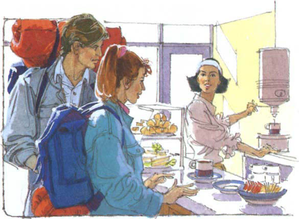
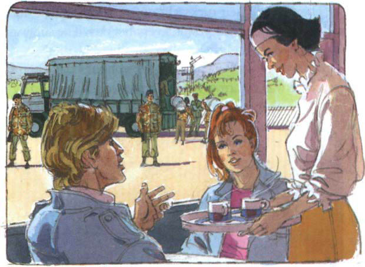
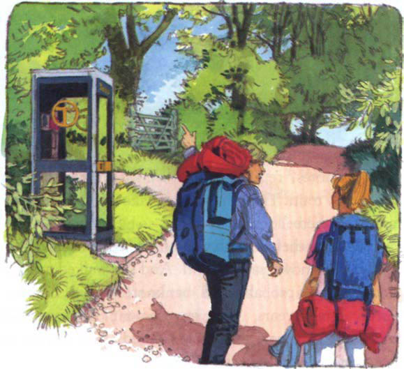
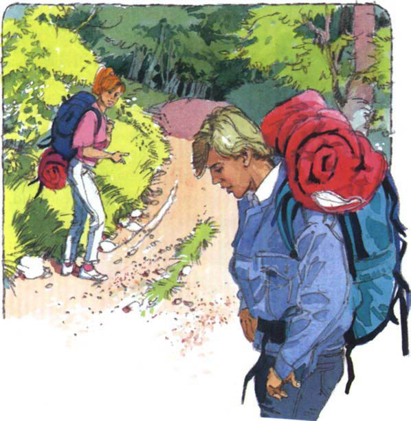
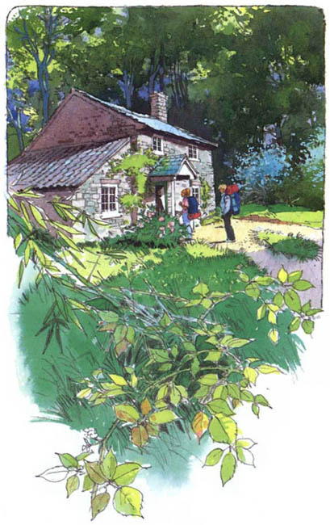

Listen to Part 1:
Sheila và Charles bước vào một quán cà phê nhỏ. Có một cô gái trẻ đứng sau quầy. Sheila tiến về quầy.
‘Sáng nay có một anh thanh niên ghé đây không?’ Sheila hỏi.
‘Một anh lính?’ cô gái hỏi lại.

‘Không, không phải lính – một sinh viên,’ Sheila trả lời.
‘Chúng tôi thấy nhiều lính ở đây,’ cô gái nói. ‘Nhưng không thấy sinh viên.’
Charles gọi hai cốc cà phê. Anh ngồi cùng Sheila bên một chiếc bàn gần cửa sổ.
‘Paul quên mất cuộc hẹn với chúng ta,’ anh nói. ‘Chúng ta sẽ uống cà phê. Rồi đi bộ tới Đồi Nhà Trọ.’
Họ ngồi bên bàn và nhìn ra ngoài cửa sổ. Vài người lính đang xếp những chiếc túi vào xe tải. Những người lính khác đang canh giữ.
Cô gái mang cà phê tới.
Listen to Part 2:

‘Có gì trong những chiếc túi kia vậy?’ Charles hỏi.
‘Tiền giấy,’ cô gái trả lời. ‘Tiền từ London chuyển tới bằng tàu hỏa. Rồi lính sẽ chuyển tiền tới một trại lính lớn gần đây.
‘Họ dùng số tiền đó làm gì?’ Sheila hỏi.
‘Tôi không biết,’ cô gái nói. Rồi cô quay đi.
‘Chúng ta có thể những tờ tiền cũ không còn lưu hành nữa,’ Charles nói. ‘Sau vài năm, chính phủ sẽ tiêu hủy tiền giấy cũ và in tiền mới. Số tiền trong những chiếc túi kia đã không dùng được nữa rồi.’
Charles và Sheila đợi trong quán cà phê. Paul vẫn chưa tới. Giờ đã hai giờ chiều.
Họ rời khỏi quán cà phê và đi tới một ngã tư. Charles nhìn vào bản đồ của Paul. Sheila chỉ vào một biển báo.
‘Đó là đường đi Barconney,’ cô nói.
Họ kéo ba lô lên vai và đi dọc theo con đường. Hôm nay là ngày rất nóng. Mặt trời chói chang và họ bước đi rất chậm.
Listen to Part 3:
Sau một tiếng, họ đi đến một bốt điện thoại. Phía bên trái có một con ngõ hẹp dẫn vào rừng.
‘Bốt điện thoại này có trong bản đồ của Paul,’ Charles nói. ‘Đây là đường đến nhà trọ.’

Họ rẽ vào con ngõ hẹp. Những cây cao mọc ở mỗi bên đường. Các nhánh cây sum suê lá.
‘Buổi ở đây thật,’ Charles nói. ‘Không có một chút nắng nào.’
‘Đi vào đây mát mẻ hơn nhiều so với đi dưới nắng nóng ở đường kia,’ Sheila trả lời. ‘Dù sao thì nhà trọ của Paul nằm ở trên đồi. Ở trên đó sáng sủa hơn.’
Họ đi sâu hơn vào con ngõ hẹp và dốc.
‘Mình không thích nơi này cho lắm,’ Charles nói. ‘Nó tối quá. Chọn một nơi như thế này để nghỉ ngơi thật không ổn chút nào.’
‘Thôi nào,’ Sheila nói.

Listen to Part 4:
Sheila và Charles tới căn nhà trọ. Xung quanh ngôi nhà có rất nhiều cây cao.
‘Có điều gì đó sai sai ở đây,’ Charles nói. ‘Nhìn rèm cửa kìa. Mọi cửa sổ đều đóng kín. Chắc không có ai ở trong.’
‘Đồ ngốc,’ Sheila nói.
Cô đi tới căn nhà và gõ cửa rất to. Họ đứng đợi trong chốc lát.
Sheila đẩy cửa nhà trọ. Nhưng không mở được. Cửa đã bị khóa.
‘Paul ơi?’ Charles hét. ‘Paul, anh có ở đó không?’
Không có ai trả lời.
Sheila tiếp tục gõ cửa. Họ đứng im và lắng nghe.
‘Có tiếng động bên trong,’ Sheila nói. ‘Tôi nghe thấy một tiếng động. Nghe kìa!’
Cả hai lặng thing chờ đợi. Có người mở khóa cửa.
Listen to Part 5:
‘Là Paul,’ Charles nói. ‘Tại sao lâu như vậy?’
Cửa từ từ mở ra. Một người đàn ông cao lớn, có râu đứng trong khung cửa. Ông ta trông khoảng bốn mươi tuổi. Sheila và Charles không quen người này. Ông ta là một người lạ.
‘Các người là ai?’ người lạ hỏi. ‘Các người muốn gì?’
